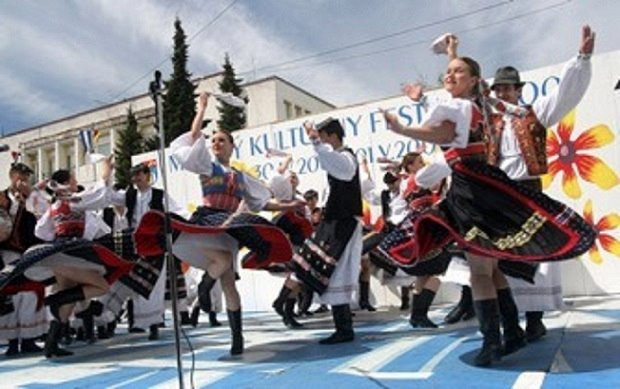
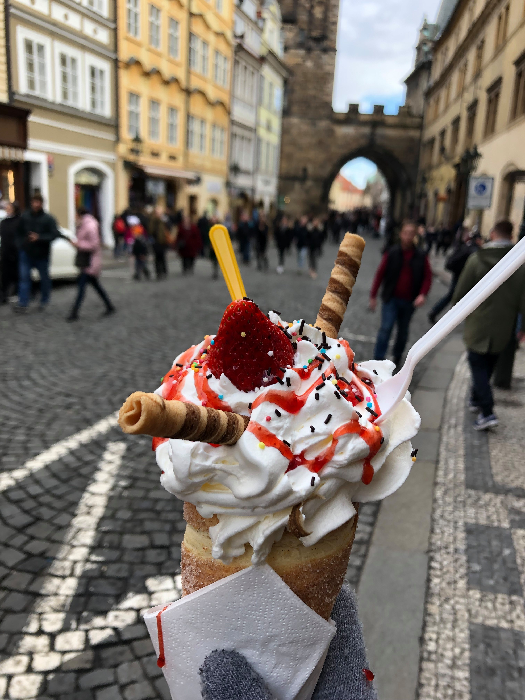
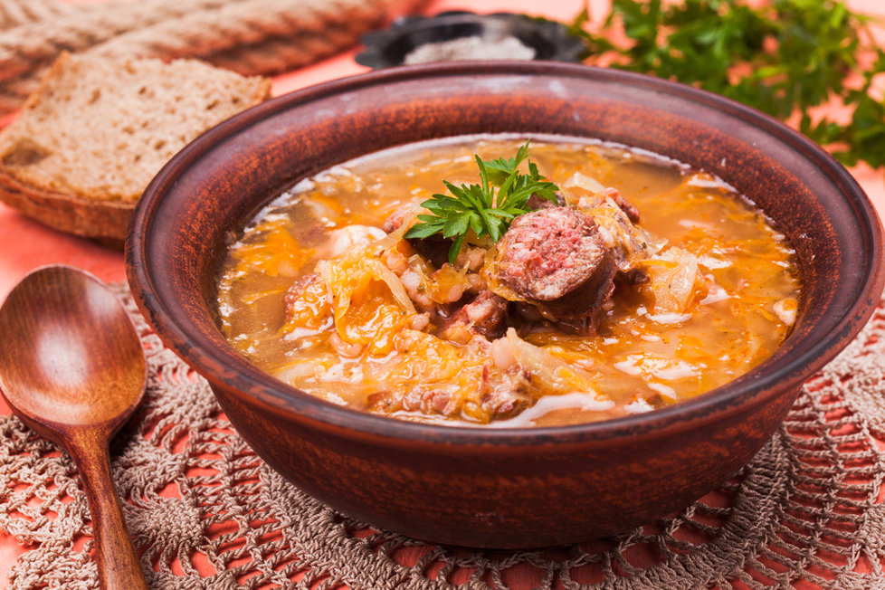

Culture of Slovakia
In this following article you can learn more and get some new information about Slovak culture. Our folklore has its own distinctive atmosphere and charm. Traditional Slovak food is really unique and delicious, anyway you should try it definitely! Slovaks have some traditions which only they can understand, so definitely read about it. It’s really interesting!
SLOVAK FOLKLORE
Slovakia is proud of its rich folklore and folk traditions. Each region, city, and municipality has a unique character and folklore – different costumes, music, songs, architecture, customs, traditions, dances and dialects. Folklore festivals organised all around Slovakia serve to present the folk customs of individual regions.
Slovak folklore dance (source: slovake.eu)
The largest folk festivals in Slovakia are held in the towns of Východná, Myjava, and Detva. Other festivals are more regional in nature, but their quality is usually comparable to that of these three festivals. Every single festival has its own distinctive atmosphere and charm.
5 TRADITIONAL SLOVAK DISHES YOU MUST TRY
Slovakia enjoys a prime location in Central Europe, surrounded by Hungary, Austria, the Czech Republic, Poland, and Ukraine. Historically, Slovakia was a part of the Austro-Hungarian Empire and later was joined together with the Czech Republic as Czechoslovakia. Due to Slovakia’s central location and complex history, many Slovak dishes also exist in surrounding countries. But almost always, Slovaks have added their own special twist to their local cuisine. While you can get dumplings in any Central European country, you can only find true bryndzové halušky in one place: Slovakia. Bon appétit, or Dobrú chuť!
Dumplings with sheep cheese (Bryndzové halušky)
This is Slovakia’s national dish – so if you can only try one Slovak food, make it this one! Bryndzové refers to the high-quality, creamy, soft, locally produced sheep cheese that is unique to Slovakia. The cheese is served on top of halušky, or potato dumplings, very similar to Italian gnocchi. Finally, to create the best possible combination, pieces of smoked bacon and sausage are typically sprinkled on top.

Bryndzove halushky (source: Wikimedia Commons)
Potato pancakes (Zemiakové placky)
These are often given to schoolchildren as an after school snack, but are also served a side dish or an accompaniment to soup. The best potato pancakes are fried in good quality oil and are crunchy on the outside but are gooey on the inside. They should be eaten warm with sour cream, kefir, or soured milk.

Zemiakové placky (source: Receptik.sk-Interez)
Funnel cake (Trdelnik)
Funnel cakes are amazing in winter, served warm at a Christmas market with a mug of mulled wine. The sugar and cinnamon melt delicately in your mouth, and the cake gives you energy to spend hours walking in Bratislava’s Old Town. But recently Slovaks have adapted the funnel cake to include a summer variety – one that is served with vanilla ice cream stuffed inside. Now you can enjoy this Slovak traditional dessert year round!
Trdelnik with vanilla ice cream (By Nela Vallová)
Cabbage soup (Kapustnica)
Cabbage soup makes an appearance at every traditional Christmas dinner, but is also enjoyed year round as an appetizer before the main meal. Sauerkraut is mixed into a creamy base with boiled potatoes, mushrooms, chopped ham, paprika, black pepper, and garlic. The soup is served warm, and together with freshly baked bread it is very filling on its own.
Kapustnica (source: recepty.blesk.cz)
Pierogis stuffed with bryndza (Bryndzové pirohy)
Bryndza cheese makes another appearance in Slovakia’s take on a Polish classic – the pierogi. Slovaks stuff these potato dumplings with bryndza cheese, then slather sour cream on top, and finish it off again with pieces of fried bacon. This dish is often accompanied by a glass of žinčica, sour sheep’s milk. With a tangy fermented taste, it’s not for everyone, but definitely worth a try!

Bryndzové pirohy (source: Varecha var)
3 TRADITIONS ONLY SLOVAKS WILL UNDERSTAND
Slovakia’s deeply rooted folk traditions are a significant source of national pride and identity. Due to the many possibilities for outdoor recreation in Slovakia, many people are also very active and athletic, spending weekends hiking, rock climbing, kayaking, or skiing. Here’s a quick glimpse at five unique traditions which make Slovaks truly, and uniquely, Slovak.
Keeping fish in the bathtub before Christmas
This tradition came about because eating carp at Christmas is supposed to bring good luck, but since they are bottom feeders, they taste better if kept in clean water in a tub for several days before eating. Keeping the fish in the bathtub also ensures that it stays fresh right up until Christmas Day. These days, many families still carry on this tradition. After being held captive in the bathtub for the at least two days, the fish are then gathered and prepared to cook. The carp is often served fried with a side of potato salad for a traditional Slovak Christmas meal.
Carp in the bathtub (source: The Independent)
Drinking herbal liquor in the mountains
No matter the season, spending time in the mountains is an extremely popular activity in Slovakia, as it is a country blessed with many mountains. Slovaks are always prepared with a backpack containing any possibly necessary supplies and almost always a flask of herbal liquor. Some popular brands are Demänovka, Tatra Tea, and Becherovka. Slovaks claim the herbs have health benefits such as boosting the immune system and aiding digestion, so taking a few swigs at the top of the mountain will make your time outdoors even more beneficial to your wellbeing.

Herbal liquor in the mountains-TATRA TEA (By Nela Vallová)
Taking a tree from the forest to decorate for May Day
May 1 is a national holiday in Slovakia, and there is no school or work. Instead, the men go out into the forests to find tall trees to use as May poles. The Slovak traditional May pole is a tall tree which has been stripped of all of its branches except the very top two to three feet which are left intact to look like a small Christmas tree. To these branches, Slovaks tie colorful ribbons which symbolize love, new life, and good growth. The May poles stay up in neighborhoods and in front of community centers until June 1.

1st May tree (source: DistinctExperiences.com)
By Nela Vallová, November 2019